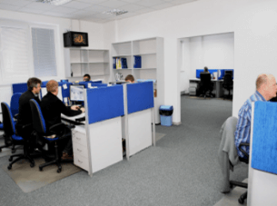
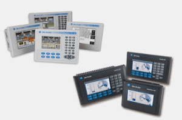
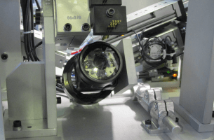
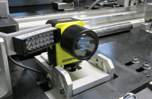

La nature de prototype de nos produits et les exigences de qualité élevées de nos clients représentent un énorme défi.
Afin de réaliser completement chaque commande du début a la fin – dans les locaux de notre entreprise, nous avons créé tous les départements nécessaires pour la conception et la construction des machines:
- Département de Construction Mécanique.
- Département de Construction du Génie Electrique et de la Programmation.
- Département de la Production de Pieces.
- Département d'Assemblage.
- Département de la Planification.
- Département des Achats, Logistique, RH et autres départements de soutien.
Dans le Département de Constructions mécaniques, notre personnel expérimenté d'ingénieurs réalise la conception des machines en utilisant les logiciels SolidWorks, Bricscad, AutoCAD, Autodesk Inventor.



La plupart des pieces conçues sont produites de façon indépendante dans notre Département de Production des Pieces. Cela nous permet de suivre les progres de la mise en ouvre en continu – en utilisant le programme exclusif de gestion de production – SSP2.


Dans le Département de la Construction Electrique et de Programmation, les concepteurs et les développeurs de logiciels utilisent BricsCAD et EPLAN Electric P8 pour créer des schémas électriques.


Nous programmons:
PLC Siemens Simatic S5 et S7 STL Simatic en langue STL, LAD, FBD, SCL et Graph


PLC Allen-Bradley MicroLogix et SLC500 en LAD


PLC Allen-Bradley ControlLogix et CompactLogix en langues Ladder, SFC, FBD et Texte Structuré


PLC Mitsubishi, GE Fanuc / Fanuc, Omron et Schneider-Electric
Panneaux HMI:
Siemens Simatic OP / TP Multipanneaux MP et KT
Allen-Bradley PanelView Allen-Bradley PanelView Plus et PanelView Plus CE
Proface HMI



Servomoteurs:
Siemens, Allen-Bradley, Bosch-Rexroth, Mitsubishi, Omron, Yaskawa, SEW, Lenze


Systemes de vision:
Cognex, Keyence, Dalsa, Omron, DVT, National Instruments, Balluff


